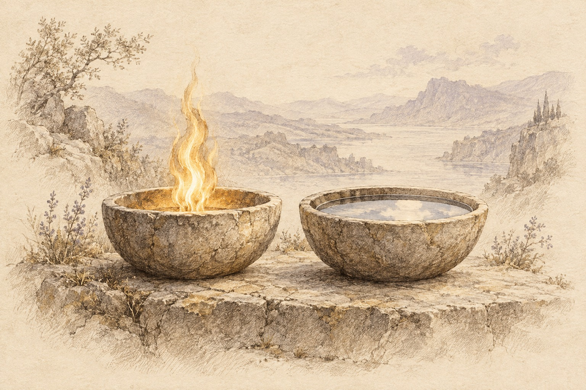

Part I
Chapter 2: Core Principles
Estimated reading time: 11 min
You have heard the Dragon’s call; these principles show how to walk its Spiral Path.
Now the fire has to survive contact with speech, choice, and the lives around you.
Interconnectedness: The Living Web
In simple terms: choices ripple. Awareness makes response possible.
This interconnectedness is the web; the awareness that follows it is the golden thread.
Interconnectedness is a structural fact rather than a sentimental idea: influence travels through a shared field. In a spider’s web, a tremor at the perimeter is carried to the center.
Your inner state expresses itself through tone, timing, posture, attention, and choice. It lands in the nervous systems around you through ordinary contact. There is no private inner life in its effects.
Plainly: influence is unavoidable.
One regulated breath before you speak can spare an evening; one unregulated outburst can travel through a room, a household, a week. You walk into dinner carrying an unspoken fight, answer one small question too sharply, and suddenly everyone at the table is braced around a mood no one named.
Pause and trace the resonance. Transformation is never only “inner”; what moves within enters relationship and helps shape what follows.
The golden thread traces that movement in two directions. Within, it follows the vertical axis through sensation, charge, value, pattern, and spaciousness. Outward, it follows inner movement into relationship, where thought becomes tone, tone becomes action, and action becomes atmosphere.
The web becomes lived when you can follow what moves within you into its effects beyond the skin.
The Union of Opposites
To walk the Dragon’s Path is to hold two truths at once without collapsing either.
Life in the Entangled Firmament moves through tension, not purity. Light and shadow, creation and destruction, strength and vulnerability arrive braided.
A Möbius strip offers a useful metaphor: what looks like two sides is one continuous surface. It does not prove a doctrine about reality; it trains the eye to notice how opposites that seem irreconcilable can belong to one living movement.
Contradiction asks us to pause where understanding has reached its edge. Growth comes from staying in contact with the tension long enough for something less obvious to become visible.
Hold your palms open in front of you. Imagine one hand holding a flame, the other a still pool of water. Can you feel both—tension and invitation?
The Dragon stands where fire meets earth: immense power resting inside stillness. Strength and vulnerability can belong to one life without either disappearing.
Paradox can widen us beyond either/or into a lived both/and. Holding the tension gives understanding time to deepen: what seemed irreconcilable may reveal a larger relation, or a belief may need correction. Resolution can then arise from discernment rather than the urge to make discomfort stop.

Power Within the Web
Power itself is neutral; ethics shape its impact.
The Dragon’s Path requires an unflinching gaze upon power. Power is not an external prize to be won, but the raw, amoral current of life itself: a fire within the Entangled Firmament, able to forge or to shatter.
Nietzsche offers one influential lens for this drive in the will to power, here read as life’s urge toward expression, expansion, and overcoming resistance.1 Within the interconnected web, that force never remains entirely private. What we do with it travels.
The challenge is to direct power with consciousness and integrity.
The Nature of Power
At its essence, power is the capacity to create effect: the force that pushes a seed through soil and a thought into action.
Power takes different relational forms. Power-over names a real differential in authority, control, resources, or consequence-bearing reach. Hierarchy is not automatically domination; its ethics depend on how the differential is held. Power-with emerges where influence can genuinely be shared among peers. Power-Under works indirectly, seeking leverage through claimed powerlessness while obscuring the force it exerts.
Healthy power-over makes authority visible and accepts the greater responsibility attached to it. Abusive power-over turns hierarchy into domination, coercion, or exploitation.
Power also needs teeth. The Warrior’s capacity to protect and stop harm most often appears as a boundary, a refusal, or the willingness to leave. At the edge, where lawful and trained, it can include proportionate physical self-defence. Force held consciously is different from domination.
The ethical aim is choice.
For some, reclaiming choice begins with restraining force. For others, it begins with learning to stop disappearing. Power may lie buried beneath numbness, chronic passivity, or the feeling of becoming a ghost in one’s own life. Reclaiming it can mean recovering the right to exist, to want, to stand in your own life, and to act from your own ground.
From that ground, generosity becomes cleaner: strength enough to give without bargaining, to say “no” without punishment, and to remain present while another is disappointed.
Potency requires containment. The urge to overexplain, overpromise, or overshare under pressure can trade agency for approval. A clear boundary may hold more power than a hundred explanations. Force gathers when it is not scattered; the Dragon does not waste its flame on every twig.
The same containment shapes vulnerability and restraint. The Dragon can open its heart without exposing its throat. The Warrior knows which battles would waste the soul. Restraint is force held in conscious reserve.
Power also ripens through release. Identity becomes more stable when it can survive the loss of forms that once protected it. What cannot be released can still govern the grip.
What we most fear losing often constrains what we most deeply need to become.
Power, then, is less about control than conscious participation with life’s creative and destructive energies.
Power and the Shadow
When the drive toward expression is denied or left unexamined, it does not disappear; it enters the Shadow—the repository of disowned and hidden parts.
There, power can return indirectly: as aggression, self-erasure, mute compliance, manipulation, or the private conviction that your life no longer belongs to you. The common thread is effect without fully owning the force that creates it.
Nietzsche’s ressentiment gives one name for a particular distortion: frustrated force converting itself into moral superiority. The inability to act is recast as a virtue, while blame carries the force that direct action could not.
Pain may be real and still become covert leverage. The pattern becomes legible through repeated behaviour, context, power, and consequence rather than distress alone.
Common Shadow Patterns of Power:
- Denial adopts helplessness to avoid accountability: I had no choice.
- Projection throws unowned force or aggression outward and then fears it in someone else.
- Manipulation turns vulnerability or guilt into covert leverage.
- Deceit uses lies, half-truths, or omission to steer the field while avoiding ownership of what follows.
- Self-erasure goes numb, chronically passive, or invisible when visibility no longer feels safe.
In each pattern, power has become distorted rather than absent. The strain can register in the body: breath shortens, the jaw hardens, vigilance rises, and choice gives way to reflex. These signals do not prove motive or settle the ethical question; behaviour, context, and consequence remain part of the inquiry.
Recognizing these patterns in ourselves is part of integration. What was hidden can then become something we can name, choose, and direct rather than something that commands us from the Shadow.
Let It Land
Before you continue, let the material touch the body.
Track the first place it registers: throat, chest, belly, hands. Do not solve it yet. Stay with the sensation long enough to notice what it may be signalling: repair, boundary, grief, or clearer speech. Let it inform the inquiry rather than decide the answer.
Bring to mind a recent conflict where both parties were “right” from their own perspectives. What two truths were present, and what shifts if you can hold them both?
Magician and Shadow
The central aim of the Dragon’s Path is wholeness: enough integration to meet pressure without splitting apart. That capacity helps us navigate paradox and steward power, though integration alone does not make power ethical; values, consent, conduct, consequence, and accountability still shape how it is used.
The Dragon holds shadow and light, power and stillness, within one inner reality. To embody it is to reclaim what has been disowned or underdeveloped without letting any single part rule the whole.
Two guides serve this work differently: the Magician is an archetypal current of conscious transformation, while the Shadow is the archive of material it can help bring into view.
The Magician works through perception and intention. Its signature tool is reframing: changing how experience is seen so new action becomes possible. Perception shapes energy, energy shapes action, and action helps shape the life that follows.
Reframing can also become distortion. Divorced from honesty, it can bypass responsibility, rewrite history, or minimize harm. When the Magician’s light blinds rather than illuminates, the tool meant to reveal possibility begins hiding the truth integration came to recover.
One called it “setting boundaries” when they went silent for days. Another called it “radical honesty” when they listed the other’s flaws. Both were reframing avoidance as virtue. The Magician’s power turned against integration, weaponizing spiritual language to bypass repair.
Notice moments when you rationalize actions you later regret—that’s the Magician’s shadow side at play. When you harshly judge another, what part of you might be projecting your own shadow?
The Shadow holds what identity has hidden or rejected: fears, repressed desires, unspoken narratives, judged qualities, dormant strengths, and the selfish, resentful, avoidant, or harmful parts we would rather not own. Here, Shadow means personal psychological material, distinct from the wider cosmological unknown called the Dark Entangled.
Confronting the Shadow is reclamation. The Magician can reframe; the Shadow supplies what was disowned. Their honest collaboration brings hidden material into conscious relationship so it can be examined, directed, and answered for.
Repeated honesty gives this integration structure. More of the self becomes consciously inhabited, and that coherence is tested in relationship, where inner work becomes conduct.
What parts of the self have you hidden in the Shadow, and how might the inner Magician begin reclaiming them?
What gifts might the Shadow offer once approached with courage and curiosity?
Each honest act of integration brings more of life into contact: fewer exiled parts, fewer secret saboteurs, more speech you can stand behind. Whatever is practiced repeatedly—honesty or avoidance, direct naming or clever reframing—becomes easier to repeat.
Law of Integration: What is reinforced becomes integrated. What is integrated reinforces itself.
The law is morally neutral. Repeated honesty can become structure, and repeated avoidance can do the same. Integration practice therefore requires discernment and conscious selection; repetition alone does not make a pattern wise.
Intention & Impact
To walk inside the Entangled Firmament is to know that each step carries intention and impact. Our choices about power land in the lives around us. Discernment begins by learning to distinguish what we meant, what we did, and what arrived.
The Reality of Unintended Harm
Even with sincere intentions, we sometimes cause harm. Sometimes we hurt the people we love.
The work begins with ownership: naming what happened, naming its effects, and determining what truth is asking next.
Often the behaviours behind harm are old survival strategies—once adaptive, now automatic. We can meet these patterns with compassion while taking responsibility for what happened. Self-compassion is not acquittal; it lets truth, remorse, and repair become possible.
The Truthful Response to Harm
Repair is one honourable response to harm, not the only mature one. When repair is truthful, accountability can be simple: acknowledge → apologize → amend. Strength appears in the willingness to name harm without defensiveness, offer genuine remorse, and change the pattern.
Sometimes truth asks instead for a clear limit, distance, or an ending that stops further harm. The response reveals whether power can remain honest in relationship.
Where have good intentions led to unintended impact?
What response would make this honest?
Discernment Inside the Field
Impact emerges within a field: what you actually do, the power you carry, another person’s history and nervous-system activation, the injury present, and the context you share. Intention matters, but no single element determines the whole encounter.
A raised voice can leave one person frightened and another newly attentive. “Attack” and “overdue honesty” are interpretations of what happened. They matter, while remaining distinct from the observable act and its effects. Discernment tests interpretation against behaviour, power, injury, and context.
Skill lies in holding these layers apart long enough to see them clearly: what you meant, what you did, and what arrived.
Compassion can meet the wound without obscuring conduct or consequence.
Living the Principles
Do not memorize these principles. Practice them.
When heat rises, run the five-point check:
- Interconnectedness: Who is in range of this choice?
- Paradox: What two truths are both present?
- Power: What force is moving through me right now?
- Integration: What part of me am I tempted to exile?
- Accountability: What action—repair, boundary, or exit—would answer this with integrity?
Find the hinge in your answers.
Name the edge you can honour now.
Choose the action you can own.
The Five Energetic Bodies give this compass its felt anatomy, helping you sense coherence before action rather than only think your way toward it.
Feel the Dragon in the warmth that can stay in the room without tipping into harm. Feel it in your ribs and your feet.
Prove it in the next small choice.
This is a narrow use of the phrase—a lens for inner dynamics, not an endorsement of Nietzsche’s full philosophy or any later ideological appropriations of it.↩︎